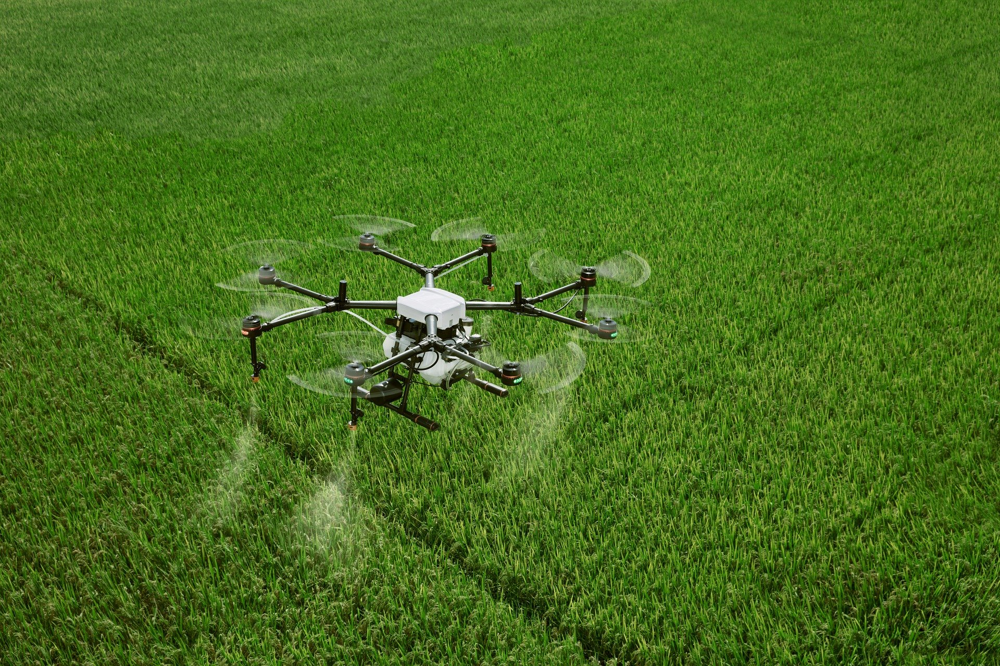

Tecnologias que Transformam o Campo
As inovações tecnológicas estão remodelando a agricultura, trazendo ferramentas que aumentam a eficiência e a sustentabilidade. Conheça algumas das principais tecnologias usadas no campo:

Drones Agrícolas
Equipados com câmeras multiespectrais, drones mapeiam plantações, identificam áreas com pragas ou deficiência de nutrientes e auxiliam no planejamento de irrigação.
Sensores IoT
Dispositivos conectados monitoram umidade do solo, temperatura, pH e níveis de nutrientes, enviando dados em tempo real para plataformas de gestão agrícola.
Tratores Autônomos
Equipados com GPS e IA, esses tratores realizam tarefas como aragem, semeadura e pulverização com precisão milimétrica, reduzindo o consumo de combustível.
Imagens de Satélite
Oferecem uma visão ampla das plantações, permitindo monitoramento de grandes áreas e detecção de mudanças climáticas ou problemas nas culturas.
Robôs Agrícolas
Robôs realizam tarefas como colheita de frutas, capina seletiva e plantio automatizado, aumentando a eficiência e reduzindo custos operacionais.